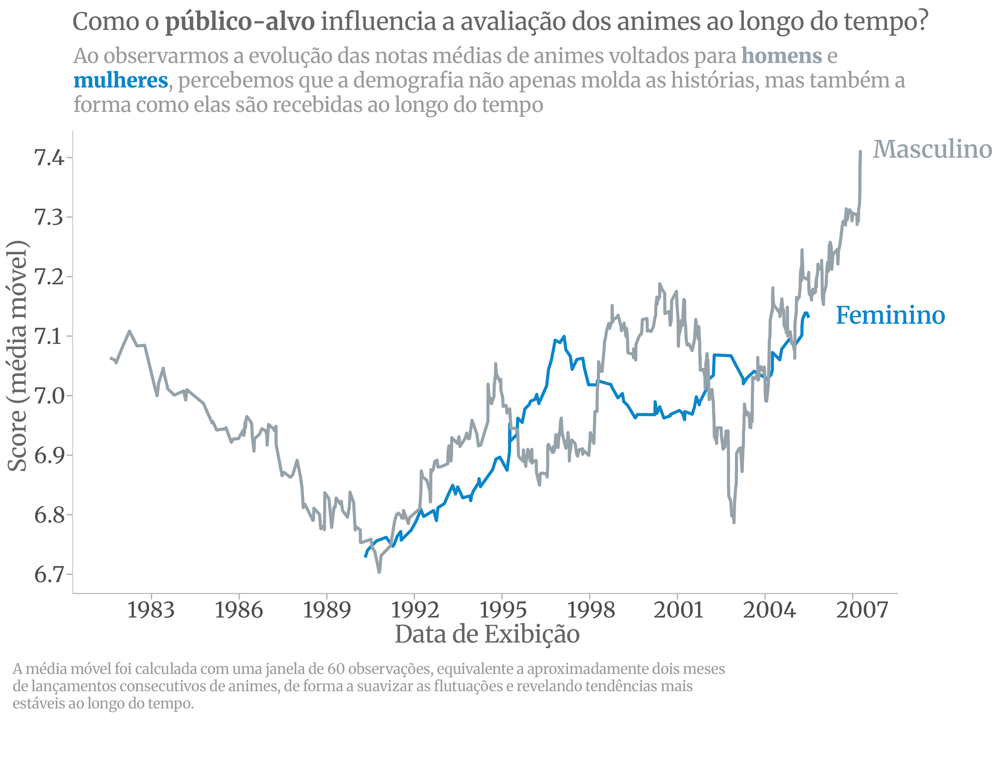

Quando pensamos em animes, é quase automático lembrar dos gêneros: ação, romance, comédia, fantasia. Mas existe uma divisão menos falada — e nem por isso menos determinante — que molda não apenas o que se conta, mas como se conta, e sobretudo, como essas histórias são recebidas pelo público. Trata-se da demografia. Em outras palavras, para quem aquela história foi pensada?
Na indústria japonesa, essa distinção é levada a sério. Algumas obras são criadas com os olhos voltados para meninos adolescentes — o universo shounen. Outras, para meninas da mesma faixa etária, formando o delicado e intenso mundo shoujo. O selo seinen costuma guardar tramas dirigidas a homens adultos; já o josei contempla narrativas voltadas às mulheres adultas, com outra cadência, outras inquietações. Essas categorias vão além do público-alvo, elas moldam o ritmo, os temas, os dilemas morais e até os silêncios da narrativa.
Foi a partir disso que uma pergunta começou a me rondar: será que a nota média de um anime tem relação com o público para o qual ele foi feito? Para tentar entender isso, mergulhei em uma base de dados extraída do MyAnimeList, uma das maiores plataformas de recomendação e avaliação de animes do mundo.
O banco reune milhares de títulos, com informações que vão desde a nota média, número de episódios, popularidade e gênero, até a classificação etária e a demografia a que cada obra se destina. Com esse material em mãos, segui com testes estatísticos e explorações visuais, na tentativa de responder:
a quem se destina uma história influencia o modo como ela é julgada?
O ponto de virada entre os grupos demográficos
Ao olharmos para a Figura 1, que acompanha a evolução das notas médias atribuídas aos animes destinados aos públicos feminino (Shoujo/Josei) e masculino (Shounen/Seinen), um ponto chama a atenção: a curva do tempo se dobra na década de 1990. Os animes shounen e seinen já vinham desfrutando de prestígio, embalados por fenômenos como Dragon Ball Z e Yu Yu Hakusho, que conquistaram gerações com seu apelo direto ao carisma e adrenalina. Mas é por volta de 1995 que algo começa a mudar do lado oposto do espectro.
A nota média dos animes shoujo e josei, antes relegados a patamares mais baixos, inicia uma ascensão que se manteria firme nas décadas seguintes. Aqueles enredos antes associados a romances açucarados e personagens unidimensionais passaram a abrigar conflitos mais densos com reflexões íntimas.
Produções como Revolutionary Girl Utena (1997) — com sua estética provocadora e suas metáforas afiadíssimas — e, mais adiante, Fruits Basket (2001), com sua delicadeza devastadora, mostraram que o universo feminino no anime não era sinônimo de superficialidade. Identidade, dor, amadurecimento, crítica social: tudo isso passou a compor o repertório dessas narrativas. E foi justamente aí que elas começaram a ser vistas com outros olhos.
Do outro lado, o domínio dos shounen/seinen começou a perder fôlego. A partir dos anos 2000, um certo cansaço se instalou. Multiplicaram-se os títulos com fórmulas previsíveis, batalhas colossais mas sem peso dramático, personagens replicados em série com motivações recicladas. Ainda houve resistência — Naruto, Bleach e outros nomes seguraram as pontas por um bom tempo —, porém o público, cada vez mais exigente, passou a cobrar algo além da ação. Queriam histórias que os surpreendessem, que os tirassem do lugar. Paradoxalmente, foi no shoujo, historicamente visto como um gênero “menor”, que encontraram respostas mais ousadas, ou melhor, mais humanas.

Figura 1: Média móvel das avaliações por grupo demográfico (shoujo/josei e shounen/seinen)
Antes de comparar as avaliações médias entre os grupos, testei a homogeneidade de variâncias. O resultado apontou diferenças entre os animes voltados ao público masculino (shounen e seinen), o que me levou a aplicar o teste t de Welch, mais apropriado nesses casos.
O que revelam os testes de Welch sobre a audiência
Os testes de Welch revelam contrastes marcantes entre os grupos analisados. Ao comparar os animes voltados ao público masculino, observou-se que os títulos classificados como shounen apresentaram, em média, avaliações mais altas do que os da categoria seinen. A diferença, embora estatisticamente significativa, não é ampla: cerca de 0,19 pontos separa as médias (7,05 contra 6,86). Ainda assim, esse pequeno desvio pode carregar significados como a preferência ainda que tênue do público por narrativas mais juvenis e idealistas, típicas do shounen, em detrimento dos enredos mais introspectivos e maduros do seinen.
No universo feminino, o movimento foi o oposto. Animes josei superaram os shoujo em média de avaliação. A diferença de aproximadamente 0,41 pontos (7,26 para josei e 6,85 para shoujo) é relevante e aponta para uma crescente valorização de histórias que abordam temas mais densos, com personagens complexas e tramas emocionalmente mais realistas. É possível enxergar, nesse resultado, um reconhecimento maior da audiência por obras que rompem com o simples romantismo e apostam em camadas de profundidade e amadurecimento narrativo.
A Tabela 1 mostra que o público shounen concentra a maioria das produções em gêneros como ação (21,1%), sobrenatural (22,5%) e comédia (18,4%), enquanto o seinen apresenta alta proporção de ecchi (21,3%) e também valoriza ação e temas sobrenaturais. Já no shoujo o destaque vai para romance (15,6%) e drama (10,2%), com presença menor, mas relevante, de fantasia e ação. Por fim, o josei se concentra mais modestamente em romance (2,1%), sobrenatural (1,8%) e drama (1%), o que evidencia um foco em tramas realistas voltadas à vida adulta.
O cruzamento entre o mapeamento de gêneros e os testes estatísticos — que mostraram melhores avaliações para o josei em relação ao shoujo e notas mais baixas para o seinen frente ao shounen — nos revela algo interessante. Embora a produção ainda seja dominada por títulos voltados a garotos, é no público feminino adulto que têm surgido narrativas mais maduras, assim como emocionalmente intensas. Um lembrete de que, no mundo dos animes, impacto não se mede em volume e que, muitas vezes, a sutileza de um drama bem contado pode deixar marcas mais duradouras do que qualquer cena de ação.
Narrativas que crescem com o público: o mérito da medida certa
Já a Figura 2 revela como a avaliação média dos animes varia conforme a classificação indicativa. Animes voltados ao público geral (G) e infantil (PG) tendem a receber notas próximas, mas um pouco abaixo das faixas adolescentes e adultas. O destaque vai para os títulos classificados como R (17+), que obtêm as médias mais altas. A média de R (6,9) supera, por exemplo, a de PG-13 (6,7).
Figura 2: Classificação indicativa e avaliação média dos animes
Curiosamente, a nota volta a cair nas classificações mais extremas (R+, com nudez leve, e Rx, voltado ao público adulto com conteúdo explícito), ou seja, exageros sensacionalistas não são necessariamente bem avaliados. O público parece recompensar obras que sabem amadurecer com ele — aquelas que tratam temas adultos com equilíbrio, sem cair na superficialidade nem na provocação vazia.
Conclusão
O público para o qual um anime é feito ainda influencia elementos como estética e linguagem, mas não determina, por si só, como ele será avaliado. Os dados analisados mostram que obras destinadas a demografias menores, como josei e seinen, frequentemente recebem notas mais altas, como é o caso de josei, e sugere que o conteúdo emocionalmente mais pesado tem ressoado com o público em geral — e não apenas com seu nicho original.
Talvez esse padrão reflita mudanças geracionais mais profundas. Como apontou o psicólogo Peter Gray em entrevista à BBC News Brasil (2024), o crescimento da ansiedade e da depressão entre jovens está ligado à falta de autonomia desde a infância. Sem espaço para enfrentar desafios reais, muitos buscam na ficção um espelho onde possam se ver e sentir o que não encontram fora dela.
Nesse contexto, animes mais introspectivos e realistas oferecem não só entretenimento, mas também uma forma de catarse. A forma como avaliamos essas obras parece menos ligada ao seu “alvo de mercado” e mais ao quanto elas nos ajudam a lidar com questões internas. Em tempos de fragilidade emocional, o público valoriza histórias que tratam com profundidade os dilemas da vida.
Referências
BBC NEWS BRASIL. “Falta de independência está por trás de crise de saúde mental em crianças”, diz psicólogo americano. YouTube, 27 jan. 2024. Disponível em: https://www.youtube.com/watch?v=1GGFvQoltXA. Acesso em: 26 jul. 2025.